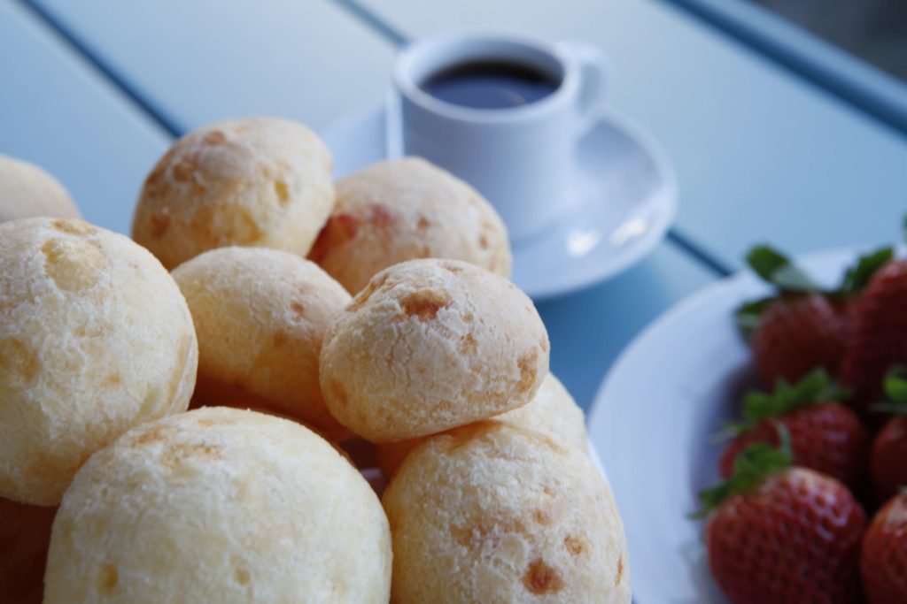
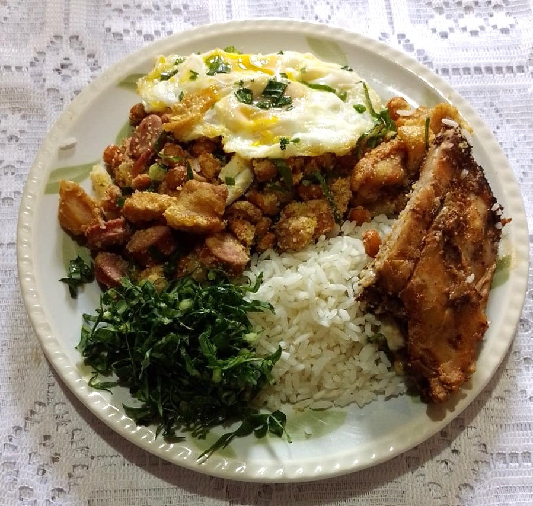
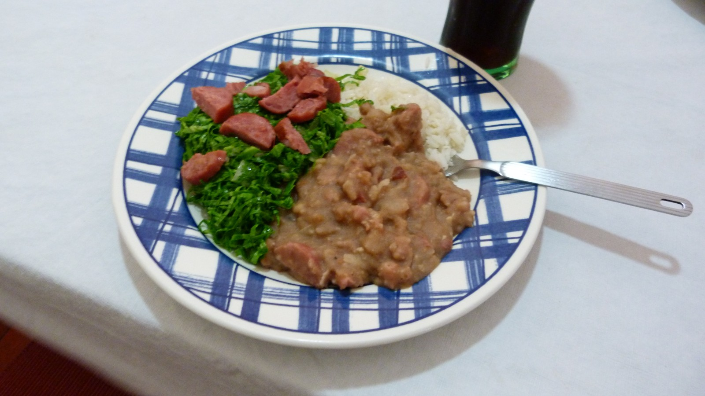
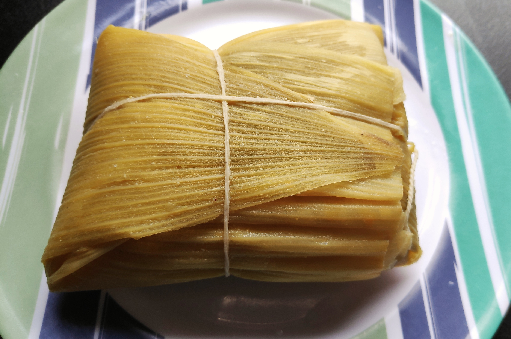
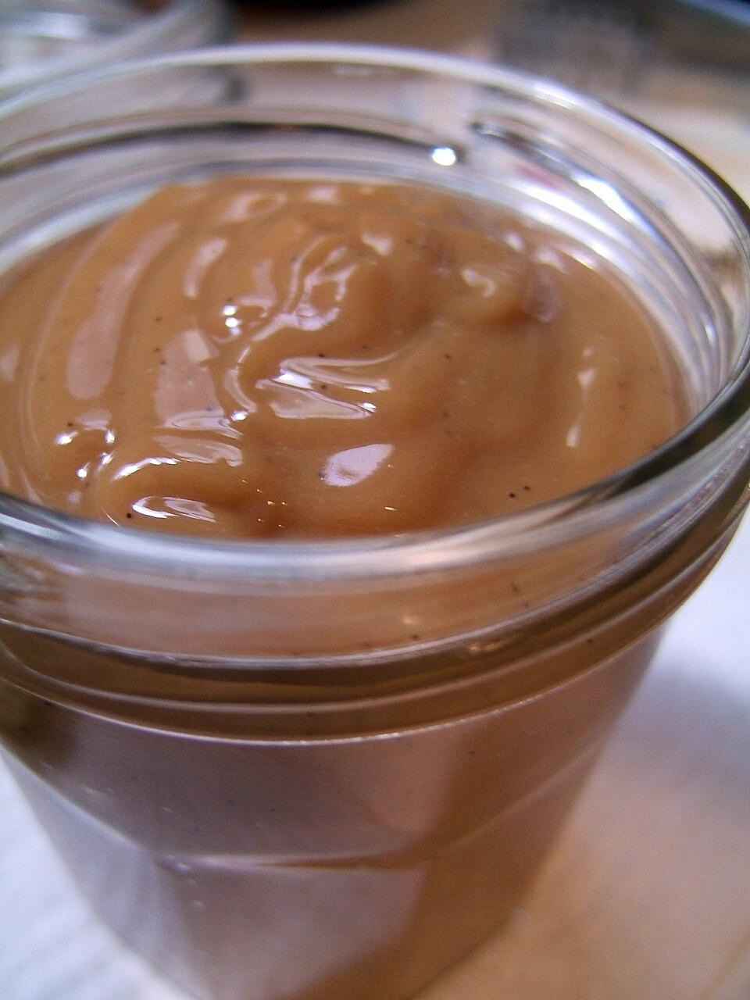
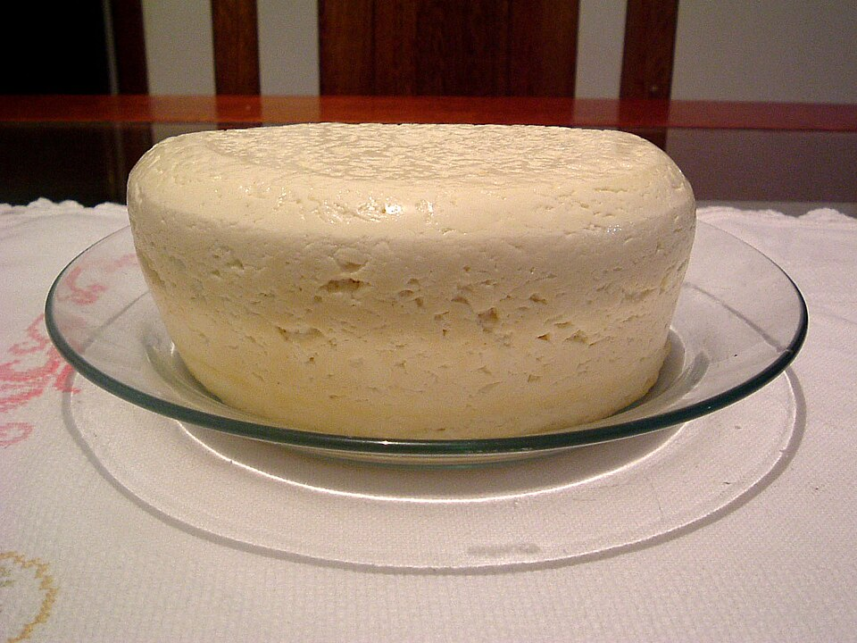

Comidas típicas do Uaistival
De 2 a 6 de dezembro, o UAISTIVAL celebra as raízes e a hospitalidade mineira. Veja algumas comidas típicas que fazem parte dessa viagem pelos sabores da nossa terra.

Foto: Acfariac · CC BY-SA 4.0

Foto: Jdorbrazil · CC BY-SA 4.0

Foto: Emerson Pardo · CC BY 2.0

Foto: Melsj · CC BY-SA 4.0

Foto: audinou · CC BY 2.0

Foto: Hellkt · Domínio público